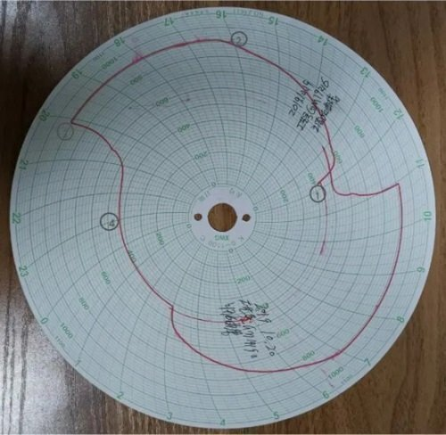

In order to make the blank of the cast pipe mould have the required mechanical properties, physical properties and chemical properties, in addition to the reasonable selection of materials and various forming processes, the heat treatment process is often indispensable. Let's analyze the common problems about blank heat treatment one by one.
The heat treatment of the blank of the cast pipe mould mainly refers to a metal hot working technology in which the material in the solid state is heated, kept warm and cooled to obtain the expected structure and properties.
A. Greatly improve the rigidity, hardness, wear-resisting degree and fatigue strength of the cast pipe mould;
B. Eliminate the residual stress of the cast pipe mold, stabilize the size, and reduce the probability of deformation and crack;
C. Stabilize the structure and size of the cast pipe mold to ensure accuracy;
D. Improve and improve the processing performance of cast pipe molds.
Hardness requirements of cast pipe mould: generally HBW230-270, heat treatment according to customer drawings hardness requirements; The hardness of the heat treatment of the cast pipe mould is a very important mechanical property index. The unqualified hardness is a very serious problem and defect.
A. Insufficient or uneven hardness of the cast pipe mould after heat treatment will reduce the wear resistance and fatigue strength of the mould;
B. Lead to early failure of the cast pipe mould, seriously reducing the service life of the mould and reducing The Times of tube pulling;
C. If it is too large or too small, it shall be returned to the furnace for annealing to make it meet the requirements of customers' drawings before it is qualified.
Test:
Brinell hardness test is all hardness test indentation of the largest one of the test methods, it can reflect the comprehensive performance of the cast pipe mold, not affected by the sample microstructure microstructure segregation and uneven composition. A Brinell hardness tester was used for testing, and sundries such as oxide skin on the surface of the cast pipe mold were polished clean. Four sample points and five cross sections were selected from the same section of the outer diameter, and a total of 20 points were tested. The test value is compared with the range required in the drawing. If it is not within this range, heat treatment shall be carried out again until qualified.
Control:
A. Strictly control the time and temperature of preheating, annealing, normalizing, aging treatment, tempering and tempering, quenching, nitriding and other technological processes of the cast pipe mould through the furnace temperature curve diagram.
B. When testing Brinell hardness test, the surface of the cast pipe mould should be smooth and smooth, and there should be no oxide scale and dirt, especially no grease. In this way, the precision measurement of the hardness of the cast pipe mould can be guaranteed.

High temperature hardening diagram
The figure is the quenching function in the process of heat treatment, such as the label ① for the first batch of blank at 12:15 at 440℃ into the furnace, after 4 hours of continuous temperature rise, and rise to 900℃ heat quenching for 4 hours, and then after 1 hour of cooling cooling furnace, into the next process. The second batch of quenching process begins at 3 am the next day.